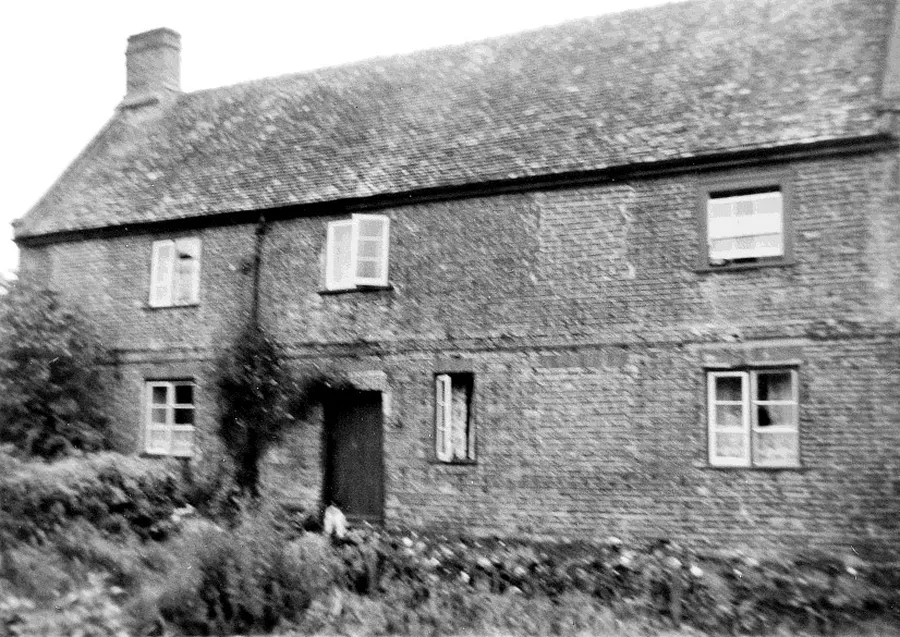
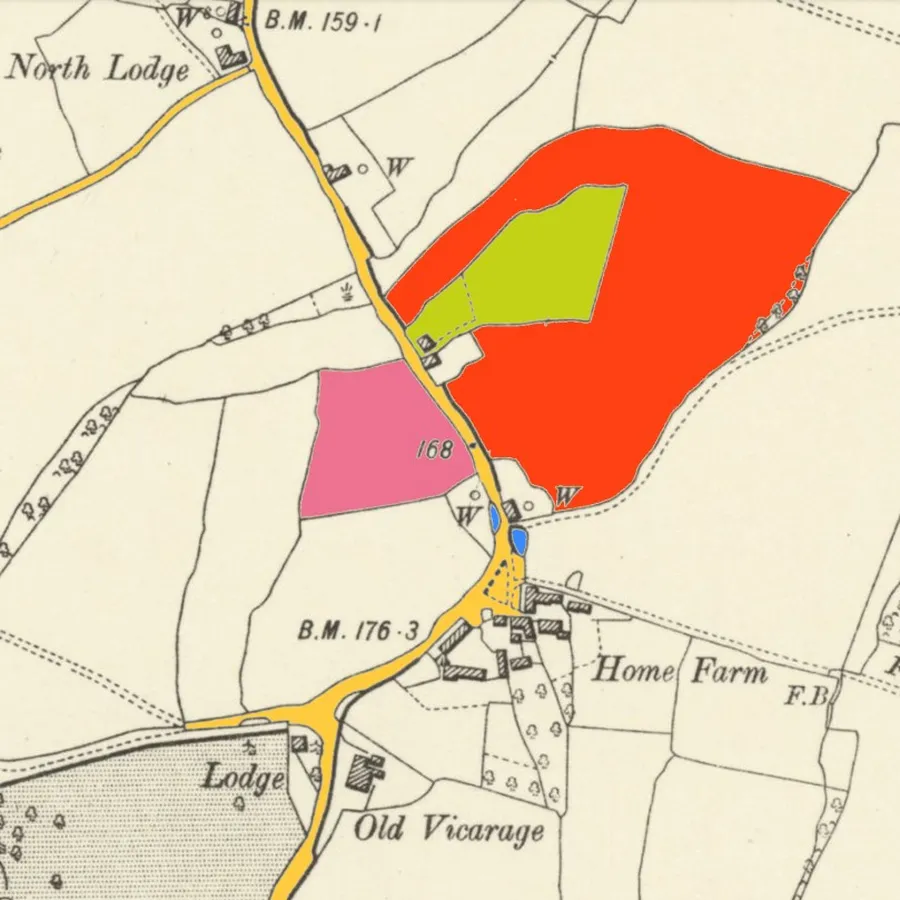
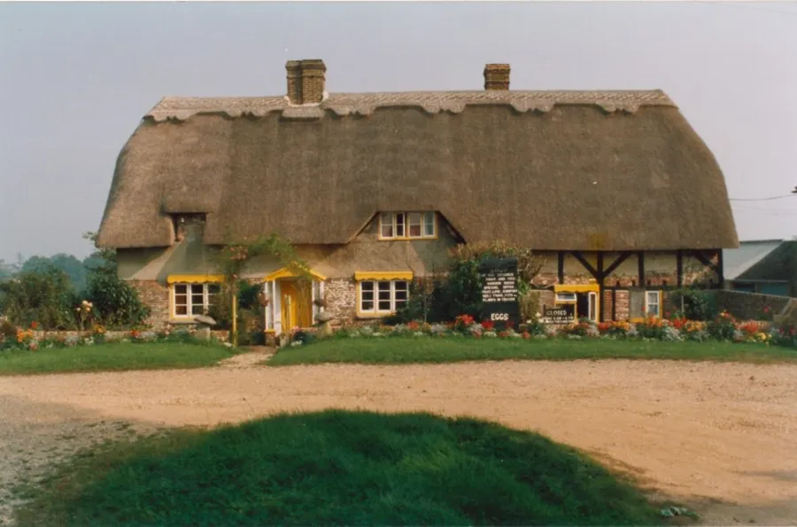
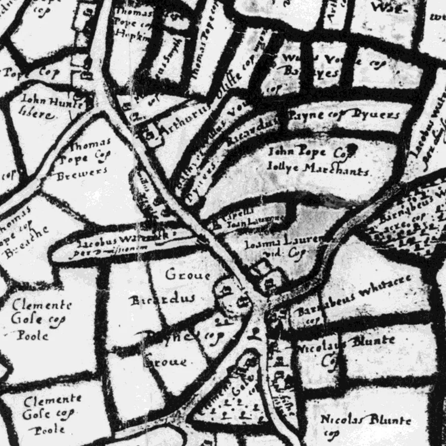
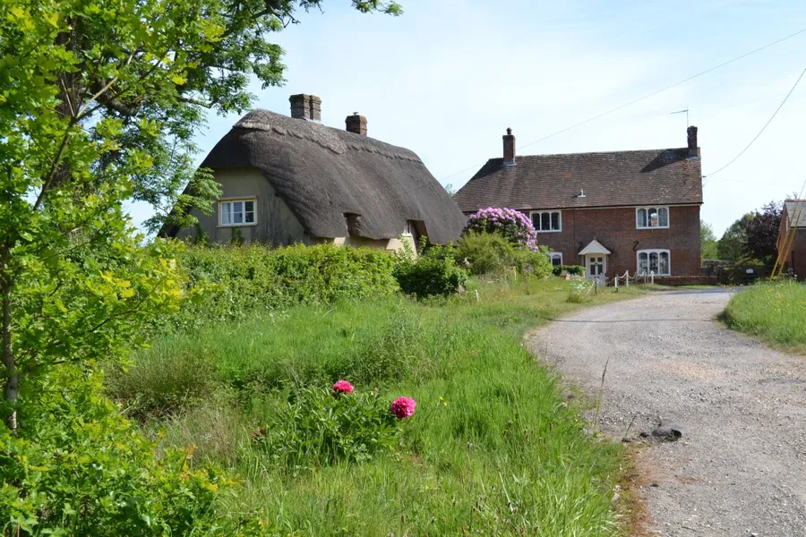
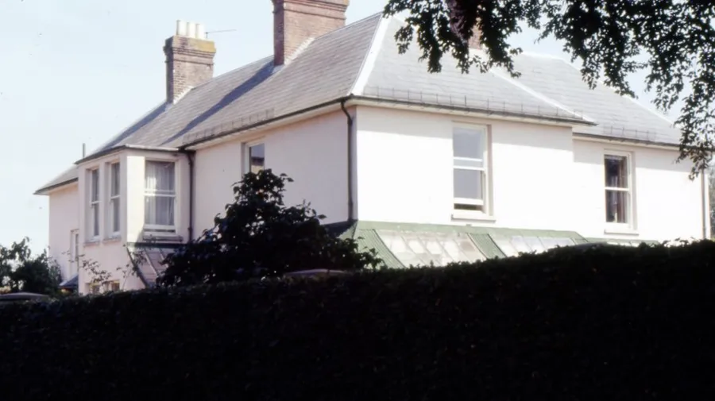

Alderholt Street and the Green
by Adrian King

Alderholt Street is the old name for the road between Alderholt Mill on the Hampshire border and the junction of Hillbury and Fordingbridge Roads just beyond the railway arch. This road is now called Sandleheath Road while Hillbury Road was originally called Ringwood Road.
It was along this road that the original settlement of Alderholt developed. A small settlement had been established by the turn of the 14th century. The village quickly developed with more dwellings being erected along the road so that by the second decade of the 14th century there seems to have been 14 separate holdings with a total of about 200 acres enclosed as pasture or under cultivation.

The site chosen for the village was a plateau of sandy soil on the northern edge of the heathlands.
Little changed over the next 100yrs because by 1424 there were still only 15 tenements one of which had about 32 acres of land. Seven of the others had 16 acres each and the remaining seven farming eight acres each.
In the early years of the village all of the tenants had been obliged to help with the sowing, hoeing, harvesting and carting away of the crops and the shearing of sheep on the Manor Farm at Cranborne. By the middle of the 14th century the villagers no longer had to do this. Instead each tenant of eight acres had to pay 3s 0¾d a year and the others 3s 5¼d in addition to their usual rents.

Pink – Little Chapel Close
Red – Great Chapel Close and Chapel Close
Green – Chapel Close (William Reed)
Clay has always been an important feature of village life at Alderholt and it is most probable that this was an influential factor in the original decision to site the village here. The Reading Beds which run through the northern part of the village are a source of good potting clay and domestic earthenware vessels have been made here throughout the community’s existence.
Like any typical village we find strung out along this road
- The church — St. Clement
- Farms
- A mill
- A blacksmith
- A school
- A village pond
- A green near Home and Manor Farms
- A public house — The New Inn
From the surviving documentation of the 16th century we find recorded the names of the families along with many of the details of their day to day lives. Fry, Lawrence, Payne, Gosse, Vowle, Grey, Newman and Blunt were some of the more established surnames at this time.

The Village Pond is situated near Home Farm. Its restoration was initially mentioned as a millennium project but it was not until January 2010 that the owners of nearby Wheelers Cottage discussed with the Parish Council their wish to restore the pond.
The owners had already cleared the footpath that ran along the boundary edge of the pond.
Because the pond was 'overgrown, unkempt and full of rubbish' they had contacted the EDDC* Biodiversity Department. It was hoped that a grant would be available from the biodiversity group to assist with the work as trees needed to be cleared with the bottom of the pond cleaned and the edge banked.
Most of the money would be spent on clearing the trees but the timber reclaimed could be used to bank up one side of the pond and by the footpath to help with flooding problems.
It was not clear who owned the land. At the time a public notice was displayed requesting information regarding ownership.
Quotations were obtained for a public noticeboard to display information about the pond. The restoration has been completed but no noticeboard is in place.

The St. Clements chapel was built in medieval times and situated somewhere in the vicinity of Home Farm. Dedicated to St. Clement, Bishop and Martyr, it was a Chapel of Ease in the parish of Cranborne.
It is referred to in a document of 1574. The parliamentary returns made in 1650-53 state “that of the six churches in Cranborne Parish, St. Clement in Alderholt Street was the only fit one, there being many souls there.”
It had no minister or maintenance. A map dated 1603 shows the rough location of the chapel.
The church was destroyed by Cromwell’s army during the Civil War of 1649 and fell into ruin. Destruction was total. Even the tombstones have disappeared if there were any because some say that burials had to take place at Cranborne or a nearby church.
After 1690 it seems that the church was slowly dismantled and used for building material or for repairing damage to existing buildings. There is an oral tradition that the walls were still in position during the 1730’s. By the late 18th century it had ceased to exist at all. Hutchins 1st edition 1774 states that by his time it had been “long since desecrated.”

It is thought that beams from the church were used in buildings near Home Farm. During renovation to a thatched cottage between North Lodge and Alderholt Mill an old bow or A beam with an eighteen-foot base was exposed.
The exact location of the chapel is not known but it was probably in the vicinity of Bearhouse Saddlery. The 1650–53 parliamentary returns mention that the site of the chapel was in Chapel Hays now known as Blomells.
An entry in the Cranborne Churchwardens accounts of about 1700 says that "St. Clements chapel Alderholt was sited in Chapel Hays (now Blownts) near ye middle of ye streat." Until relatively recently tithes had to be paid on certain fields around Home Farm. An agricultural union fought to have this removed.
The fields are not known by these names now but an early seventeenth century map of Alderholt shows land near Home Farm belonging to Nicolas Blunte. It might be then that the names Blomells, Blunte’s and Blounts refer to the same plot of land.

Alan Herrington who lives at Manor Farm, said that he thought that the house called The Old Vicarage was in fact the site of the vicarage and that a path went from the back of the property across the fields to St. Clements.
Research has shown that the Revds. Alfred Lowth, Richard Wix, William Tapp and John Barrow all lived at The Old Vicarage. Rev. John Barrow was the first vicar to live in the new vicarage when it was built nearer the church. What must their journey to the church have been like in the early years when there was no roads.
With the Enclosure of the land further south and the new road Alderholt Street ceased to be the village centre and it moved to where it is today.
* EDDC — East Dorset District Council